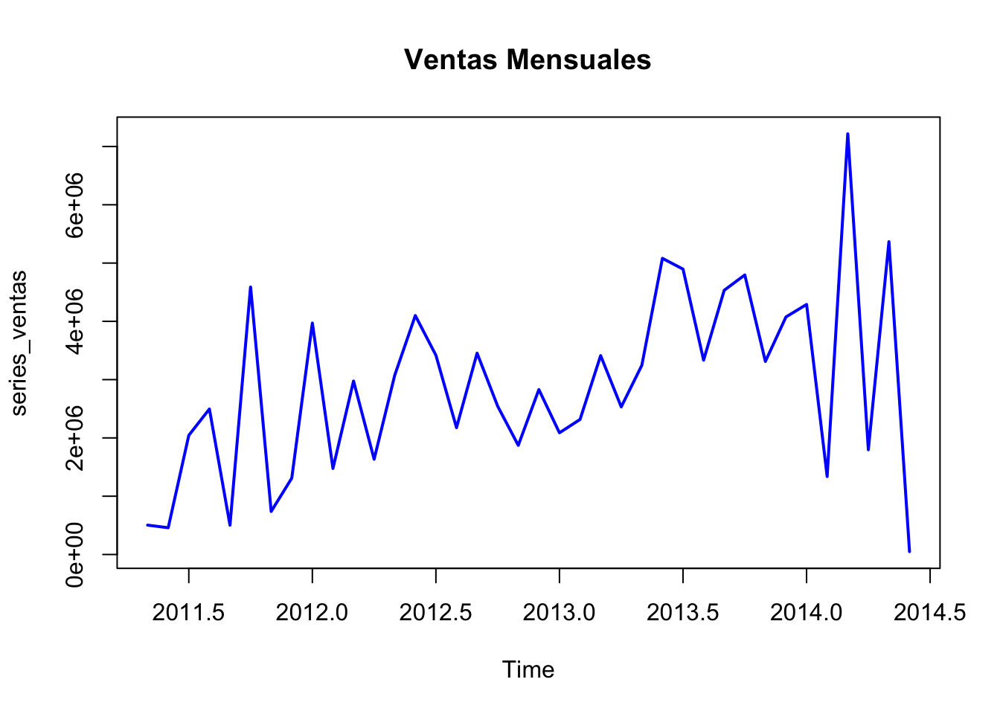

1. ¿De qué tipo de variables se compone mi base de datos? Realize un análisis descriptivos de las varaibles de la base de datos (Estadística descriptiva, correlación)
Cargamos los datos en una variable.
Tenemos variables númericas, númericas booleanas y de caracteres (char).
Procedemos a seleccionar las variables que necesitaremos para el ejercicio y convertir las variables a sus tipos pertinentes.
datos <-read_excel("datos/DataSet SQL_Act3_ADMN.xlsx", sheet ="Var Discreta Adq Bicicleta")# str(datos)# unique(datos$Country)
Hemos considerado crear columnas condicionales para aquellas variables que fuera numéricas y booleanas de tipo 0, 1. De esta forma podremos hacer un descriptivo estadístico más limpio y utilizar los factores para los modelos.
Además hemos eliminado la columna “PersonType” dado que no aporta ninguna información relevante.
Por último hemos quitado aquellos valores de Country que se referían a regiones y no países: “Northwest”, “Southeast”, “Central”, “Southwest”, “Northeast”
A continuación procedemos a realizar el análisis descriptivo:
# describimos los estadísticos numéricosdatos %>%select(where(is.numeric)) %>%summary(use="complete.obs")
TotalAmount BikePurchase Age TotalChildren
Min. : 3.99 Min. :0.0000 Min. : 40.00 Min. :0.000
1st Qu.: 59.98 1st Qu.:0.0000 1st Qu.: 49.00 1st Qu.:0.000
Median : 570.47 Median :1.0000 Median : 56.00 Median :1.000
Mean : 1872.38 Mean :0.5216 Mean : 57.65 Mean :1.727
3rd Qu.: 3242.83 3rd Qu.:1.0000 3rd Qu.: 65.00 3rd Qu.:3.000
Max. :13295.38 Max. :1.0000 Max. :110.00 Max. :5.000
HomeOwnerFlag NumberCarsOwned
Min. :0.0000 Min. :0.000
1st Qu.:0.0000 1st Qu.:0.000
Median :1.0000 Median :1.000
Mean :0.6534 Mean :1.492
3rd Qu.:1.0000 3rd Qu.:2.000
Max. :1.0000 Max. :4.000
# observamos cómo se relacionan las variablesdatos %>%select(where(is.numeric)) %>%cor(use="complete.obs")
Vemos como nuestra medida de negocio TotalAmount tiene una ditribución sesgada a la derecha puesto que la media es significativamente mayor que la mediana, esto quiere decir que puede que existan algunos valores atípicos, como por ejemplo su valor máximo (13295.38), pero también es posible que el sesgo sea una característica de cómo se comporta este negocio.
Correlación
Observamos algunas variables que correlacionan fuerte, como TotalAmount y BikePurchase; cuando la compra incluye bicicletas la facturación incrementa. Y TotalChildern y Age; cuanta más edad mayor número de hijos.
2 ¿Podría estimar un modelo que le permitiera clasificar si un individuo realizará una compra o no?
Use un modelo de regresión logística y un árbol de decisión. (utilice la pestaña Var Discreta Adq Bicicleta)
En este caso la variable a predicir sería BikePurchase. Procedemos a crear los subsets necesarios para modelar (Train & Test)
#split: seleccionamos el monto de entrenamiento y lo guardamos en la variabble de trainindice <-sample(1:nrow(datos), size =0.8*nrow(datos))# Train: entrenamos al modelo con el subset de testeotrain <- datos[indice, ]# test: tomamos el monto a testartest <- datos[-indice, ]
Una vez tenemos los subsets de entrenamiento y testeo pasamos entrenar al modelo
Hemos hecho dos iteraciones, eliminaod “Gender” dado que tiene un P-value > 0.05 para evitar overfitting,
modelo_logit <-glm(BikePurchase ~ Country + MaritalStatus + HomeOwnerFlag_f + Education + YearlyIncome + Occupation, data = train, family ="binomial")summary(modelo_logit)
Call:
glm(formula = BikePurchase ~ Country + MaritalStatus + HomeOwnerFlag_f +
Education + YearlyIncome + Occupation, family = "binomial",
data = train)
Coefficients:
Estimate Std. Error z value Pr(>|z|)
(Intercept) 0.15145 0.11448 1.323 0.1858
CountryCanada -0.95597 0.07677 -12.453 < 2e-16 ***
CountryFrance -0.91150 0.07942 -11.478 < 2e-16 ***
CountryGermany -0.75696 0.08026 -9.431 < 2e-16 ***
CountryUnited Kingdom -0.71188 0.07943 -8.963 < 2e-16 ***
MaritalStatusS 0.35202 0.04971 7.081 1.43e-12 ***
HomeOwnerFlag_fTRUE 0.22941 0.05102 4.497 6.90e-06 ***
EducationGraduate Degree 0.20878 0.08329 2.507 0.0122 *
EducationHigh School -0.47881 0.07514 -6.372 1.86e-10 ***
EducationPartial College -0.44688 0.06934 -6.445 1.16e-10 ***
EducationPartial High School -1.09574 0.09471 -11.569 < 2e-16 ***
YearlyIncome25001-50000 1.07602 0.09880 10.891 < 2e-16 ***
YearlyIncome50001-75000 0.76664 0.13035 5.881 4.07e-09 ***
YearlyIncome75001-100000 0.87765 0.13824 6.349 2.17e-10 ***
YearlyIncomegreater than 100000 1.74850 0.16165 10.816 < 2e-16 ***
OccupationManagement -1.11266 0.13286 -8.375 < 2e-16 ***
OccupationManual 0.43827 0.10520 4.166 3.10e-05 ***
OccupationProfessional -0.88055 0.11768 -7.483 7.28e-14 ***
OccupationSkilled Manual -0.13632 0.09182 -1.485 0.1377
---
Signif. codes: 0 '***' 0.001 '**' 0.01 '*' 0.05 '.' 0.1 ' ' 1
(Dispersion parameter for binomial family taken to be 1)
Null deviance: 11811 on 8531 degrees of freedom
Residual deviance: 11052 on 8513 degrees of freedom
AIC: 11090
Number of Fisher Scoring iterations: 4
Procedemos a hacer el árbol:
# 1. Ajuste del modelo modelo_arbol <-rpart(BikePurchase ~ Country + MaritalStatus + HomeOwnerFlag_f + Education + YearlyIncome + Occupation, data = train, method ="class") # 2. Visualizaciónrpart.plot(modelo_arbol,main ="Árbol de Decisión: Predicción de Bike Purchase", type =2, extra =104, nn =TRUE)
3 ¿Cómo de buenos son los modelos? ¿Cuál o cuáles son las variables más importantes a la hora de realizar una compra por parte del cliente? (utilice la pestaña Var Discreta Adq Bicicleta)
Hacemos la matriz de confusión del Logit
pred_logit_prob <-predict(modelo_logit, newdata = test, type ="response")# 1# 1. Convertimos tus probabilidades a clases (0 o 1) con el corte de 0.5pred_clase <-ifelse(pred_logit_prob >0.5, 1, 0)# 2. Convertimos AMBOS a factor asegurando que tengan los mismos nivelespred_factor <-factor(pred_clase, levels =c("0", "1"))real_factor <-factor(test$BikePurchase, levels =c("0", "1"))# 3. Magia: Generamos la matriz completaconfusionMatrix(data = pred_factor, reference = real_factor)
Confusion Matrix and Statistics
Reference
Prediction 0 1
0 503 333
1 520 777
Accuracy : 0.6001
95% CI : (0.5789, 0.621)
No Information Rate : 0.5204
P-Value [Acc > NIR] : 8.065e-14
Kappa : 0.1931
Mcnemar's Test P-Value : 1.909e-10
Sensitivity : 0.4917
Specificity : 0.7000
Pos Pred Value : 0.6017
Neg Pred Value : 0.5991
Prevalence : 0.4796
Detection Rate : 0.2358
Detection Prevalence : 0.3919
Balanced Accuracy : 0.5958
'Positive' Class : 0
hacemos la matriz de confusión del arbol:
# 1. Pide la clase directamente (type = "class")pred_clase_arbol <-predict(modelo_arbol, newdata = test, type ="class")# 2. Aseguramos que sea factor y tenga los mismos niveles que la realidad# Nota: predict con type="class" ya suele devolver factor, pero esto es doble seguridadpred_factor_arbol <-factor(pred_clase_arbol, levels =c("0", "1"))real_factor_arbol <-factor(test$BikePurchase, levels =c("0", "1"))# 3. MatrizconfusionMatrix(data = pred_factor_arbol, reference = real_factor_arbol)
Confusion Matrix and Statistics
Reference
Prediction 0 1
0 707 525
1 316 585
Accuracy : 0.6057
95% CI : (0.5846, 0.6265)
No Information Rate : 0.5204
P-Value [Acc > NIR] : 1.355e-15
Kappa : 0.2164
Mcnemar's Test P-Value : 7.369e-13
Sensitivity : 0.6911
Specificity : 0.5270
Pos Pred Value : 0.5739
Neg Pred Value : 0.6493
Prevalence : 0.4796
Detection Rate : 0.3315
Detection Prevalence : 0.5776
Balanced Accuracy : 0.6091
'Positive' Class : 0
Ambos modelos presentan un rendimiento global moderado (Accuracy ~60%), siendo el Árbol de Decisión muy lgeramente superiro, casi idéntico.
Sin embargo, al analizar los errores, vemos un comportamiento interesante: el modelo de árbol es ‘agresivos’ prediciendo ventas:
Es buenos detectando potenciales clientes (Sensibilidad ~ 70%).
Pero fallan bastante al filtrar a los que no están interesados (Especificidad ~50%). Es decir, el modelo tiende a pensar que mucha gente comprará la bici cuando en realidad no lo hará (muchos Falsos Positivos).”
El modelo de logit justamente al revés, es bueno prediciendo a aquellos clientes que no están interesados siendo su Especifidad ~ 70%
Respecto a lkas as variables más importantes son las siguientes: País, Educación e Ingresos.
# Ver qué variables usó realmente el árbol y cuánto importaronmodelo_arbol$variable.importance
3 Con el total de la muestra, aplicando técnicas de aprendizaje no supervisado ¿sería capaz de definir tipologías de clientes diferentes? Puede usar las variables que considere oportunas (utilice la pestaña Var Discreta Adq Bicicleta)
Utilizaremos Clusterización con técnica K-means para descubrir patrones naturales.
Para utilziar el algoritmo de Kmeans solo pueden haber variables numéricas, por lo que el resto habría que convertirlo en variables numéricas, y los escalamos dado que tenemos variables booleanas
datos_cluster_input <- datos %>%select(where(is.numeric)) %>%select(-BikePurchase)datos_escalados <-scale(datos_cluster_input)
Como podemos ver por ejemplo el primer grupo es el qué más compra y se caracteriza principalmente por no tener casa y tener pocos hijos.
Pero vamos a hacer un árbol de decisión para saber qué variables son las más importantes.
datos_para_arbol <- datos_cluster_input %>%mutate(Cluster =as.factor(clusterizacion$cluster)) # 2. Creamos el árbol explicativo# "Cluster ~ ." significa: Predice el Cluster usando TODAS las demás columnasarbol_explicativo <-rpart(Cluster ~ ., data = datos_para_arbol, method ="class")# 3. Lo visualizamosrpart.plot(arbol_explicativo, type =2, extra =101, nn =TRUE,box.palette ="BuGn",main ="Reglas que definen cada Cluster")
5 Realice una predicción de las ventas totales (utilice la pestaña ST Ventas totales, la primera columna) para los próximos 2 meses.
#colnames(ventas)class(ventas$OrderDate) # Nos aseguramos que la columna de fecha está bien factorizada en fecha
[1] "POSIXct" "POSIXt"
min(ventas$OrderDate)
[1] "2011-05-31 UTC"
#unique(ventas$OrderDate)
Dado que los datos están registrados por día, y la actividad solicita una predicción por mes, procedemos a agrupar los registros por mes
ventas_mensuales <- ventas %>%mutate(Mes =floor_date(OrderDate, "month")) %>%group_by(Mes) %>%summarise(TotalSales =sum(Sales...2, na.rm =TRUE))# 2. Crear la serie temporal series_ventas <-ts(ventas_mensuales$TotalSales, start =c(2011, 5), frequency =12)# 3. Graficar la serieplot(series_ventas, main="Ventas Mensuales", col="blue", lwd=2)

# Realizar la predicciónmodelo <-auto.arima(series_ventas)prediccion <-forecast(modelo, h =2) # h=2 son los 2 meses que te piden# Ver los valores de la predicciónprint(prediccion)
Point Forecast Lo 80 Hi 80 Lo 95 Hi 95
Jul 2014 5080349 3293038.9 6867659 2346894.0 7813804
Aug 2014 2000199 182672.6 3817725 -779467.6 4779865
# Graficar la predicciónplot(prediccion, main="Predicción Ventas Próximos 2 Meses")